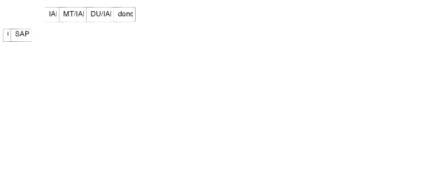
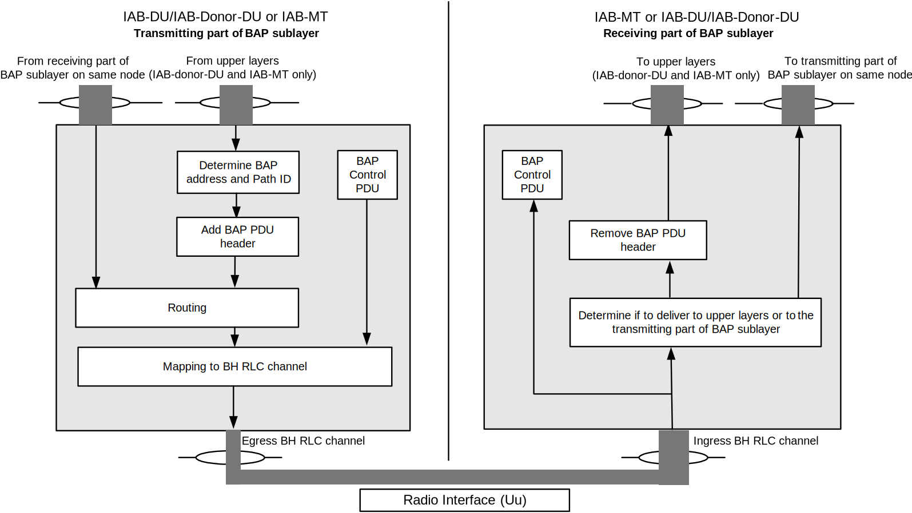
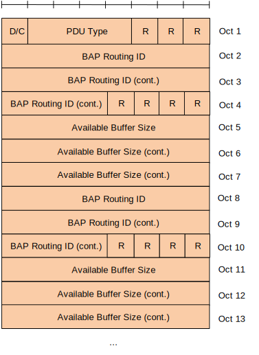

| 3GPP TS 38.340 V17.5.0 (2023-06) | |
|---|---|
| Technical Specification | |
3rd Generation Partnership Project; Technical Specification Group Radio Access Network; NR; Backhaul Adaptation Protocol (BAP) specification (Release 17) |
|
| The present document has been developed within the 3rd
Generation Partnership Project (3GPP TM) and may be further
elaborated for the purposes of 3GPP. The present document has not been subject to any approval process by the 3GPP Organizational Partners and shall not be implemented. This Specification is provided for future development work within 3GPP only. The Organizational Partners accept no liability for any use of this Specification. Specifications and Reports for implementation of the 3GPP TM system should be obtained via the 3GPP Organizational Partners' Publications Offices. |
|
|
Copyright Notification No part may be reproduced except as authorized by written
permission. © 2023, 3GPP Organizational Partners (ARIB, ATIS, CCSA, ETSI, TSDSI, TTA, TTC). All rights reserved. UMTS™ is a Trade Mark of ETSI registered for the benefit of its members 3GPP™ is a Trade Mark of ETSI registered for the benefit of its
Members and of the 3GPP Organizational Partners GSM® and the GSM logo are registered and owned by the GSM Association |
Foreword 5
1 Scope 7
2 References 7
3 Definitions of terms, symbols and abbreviations 7
3.1 Terms 7
3.2 Abbreviations 8
4 General 8
4.1 Introduction 8
4.2 Architecture 8
4.2.1 BAP structure 8
4.2.2 BAP entities 8
4.3 Services 9
4.3.1 Services provided to upper layers 9
4.3.2 Services expected from lower layers 9
4.4 Functions 9
4.5 Configurations 10
5 Procedures 10
5.1 BAP entity handling 10
5.1.1 BAP entity establishment 10
5.1.2 BAP entity release 11
5.2 Data transfer 11
5.2.1 Transmitting operation 11
5.2.1.1 General 11
5.2.1.2 BAP routing ID selection 11
5.2.1.2.1 BAP routing ID selection at IAB-node 11
5.2.1.2.2 BAP routing ID selection at IAB-donor-DU 12
5.2.1.3 Routing 13
5.2.1.4 Mapping to BH RLC Channel 14
5.2.1.4.1 Mapping to BH RLC Channel for BAP Data Packets from collocated BAP entity at IAB-node 14
5.2.1.4.2 Mapping to BH RLC Channel for BAP SDUs from upper layers at IAB-node 14
5.2.1.4.3 Mapping to BH RLC Channel at IAB-donor-DU 15
5.2.2 Receiving operation 17
5.3 Flow control 17
5.3.1 Flow control feedback 17
5.3.1.1 Transmitting operation 17
5.3.1.2 Receiving operation 18
5.3.2 Flow control polling 18
5.4 BH RLF related indications 18
5.4.1 Transmitting operation 18
5.4.2 Receiving operation 18
5.5 Handling of unknown, unforeseen, and erroneous protocol data 19
6 Protocol data units, formats, and parameters 19
6.1 Protocol data units 19
6.1.1 Data PDU 19
6.1.2 Control PDU 19
6.2 Formats 19
6.2.1 General 19
6.2.2 Data PDU 19
6.2.3 Control PDU 20
6.2.3.1 Control PDU for flow control feedback 20
6.2.3.2 Control PDU for flow control polling 21
6.2.3.3 Control PDU for BH RLF indication 21
6.2.3.4 Control PDU for BH RLF detection indication 21
6.2.3.5 Control PDU for BH RLF recovery indication 22
6.3 Parameters 22
6.3.1 General 22
6.3.2 DESTINATION 22
6.3.3 PATH 22
6.3.4 Data 22
6.3.5 R 22
6.3.6 D/C 22
6.3.7 PDU type 23
6.3.8 BH RLC channel ID 23
6.3.9 BAP Routing ID 23
6.3.10 Available Buffer Size 23
Annex A (informative): Change history 24
This Technical Specification has been produced by the 3rd Generation Partnership Project (3GPP).
The contents of the present document are subject to continuing work within the TSG and may change following formal TSG approval. Should the TSG modify the contents of the present document, it will be re-released by the TSG with an identifying change of release date and an increase in version number as follows:
Version x.y.z
where:
x the first digit:
1 presented to TSG for information;
2 presented to TSG for approval;
3 or greater indicates TSG approved document under change control.
y the second digit is incremented for all changes of substance, i.e. technical enhancements, corrections, updates, etc.
z the third digit is incremented when editorial only changes have been incorporated in the document.
In the present document, certain modal verbs have the following meanings:
shall indicates a mandatory requirement to do something
shall not indicates an interdiction (prohibition) to do something
NOTE 1: The constructions "shall" and "shall not" are confined to the context of normative provisions, and do not appear in Technical Reports.
NOTE 2: The constructions "must" and "must not" are not used as substitutes for "shall" and "shall not". Their use is avoided insofar as possible, and they are not used in a normative context except in a direct citation from an external, referenced, non-3GPP document, or so as to maintain continuity of style when extending or modifying the provisions of such a referenced document.
should indicates a recommendation to do something
should not indicates a recommendation not to do something
may indicates permission to do something
need not indicates permission not to do something
NOTE 3: The construction "may not" is ambiguous and is not used in normative elements. The unambiguous constructions "might not" or "shall not" are used instead, depending upon the meaning intended.
can indicates that something is possible
cannot indicates that something is impossible
NOTE 4: The constructions "can" and "cannot" shall not to be used as substitutes for "may" and "need not".
will indicates that something is certain or expected to happen as a result of action taken by an agency the behaviour of which is outside the scope of the present document
will not indicates that something is certain or expected not to happen as a result of action taken by an agency the behaviour of which is outside the scope of the present document
might indicates a likelihood that something will happen as a result of action taken by some agency the behaviour of which is outside the scope of the present document
might not indicates a likelihood that something will not happen as a result of action taken by some agency the behaviour of which is outside the scope of the present document
In addition:
is (or any other verb in the indicative mood) indicates a statement of fact
is not (or any other negative verb in the indicative mood) indicates a statement of fact
NOTE 5: The constructions "is" and "is not" do not indicate requirements.
The present document provides description of the Backhaul Adaptation Protocol (BAP).
The following documents contain provisions which, through reference in this text, constitute provisions of the present document.
- References are either specific (identified by date of publication, edition number, version number, etc.) or non‑specific.
- For a specific reference, subsequent revisions do not apply.
- For a non-specific reference, the latest version applies. In the case of a reference to a 3GPP document (including a GSM document), a non-specific reference implicitly refers to the latest version of that document in the same Release as the present document.
[1] 3GPP TR 21.905: "Vocabulary for 3GPP Specifications".
[2] 3GPP TS 38.300: "NG Radio Access Network; Overall description".
[3] 3GPP TS 38.331: "NR Radio Resource Control (RRC); Protocol Specification".
[4] 3GPP TS 38.322: "NR Radio Link Control (RLC) protocol specification".
[5] 3GPP TS 38.473: "NG-RAN F1 application protocol (F1AP) protocol specification".
[6] 3GPP TS 38.401: "NG-RAN; Architecture description".
For the purposes of the present document, the terms given in TR 21.905 [1] and the following apply. A term defined in the present document takes precedence over the definition of the same term, if any, in TR 21.905 [1].
BH RLC channel: an RLC channel between two nodes, which is used to transport backhaul packets, as defined in TS 38.300 [2].
Boundary IAB-node: an IAB-node with one RRC interface terminating at a different IAB-donor-CU than the F1 interface, as defined in TS 38.401 [6].
Egress BH RLC channel: a BH RLC channel on which a packet is transmitted by a node.
Egress link: a radio link on which a packet is transmitted by a node.
F1-terminating donor: refers to the IAB-donor that terminates F1 for the boundary IAB-node, as defined in TS 38.401 [6].
IAB-donor: as defined in TS 38.300 [2].
IAB-donor-DU: as defined in TS 38.401 [6].
IAB-node: as defined in TS 38.300 [2].
Ingress BH RLC channel: a BH RLC channel on which a packet is received by a node.
Ingress link: a radio link on which a packet is received by a node.
Non-F1-terminating donor: refers to the IAB-donor that has an RRC connection with the boundary node but does not terminate F1 with this boundary IAB-node, as defined in TS 38.401 [6].
For the purposes of the present document, the abbreviations given in TR 21.905 [1] and the following apply. An abbreviation defined in the present document takes precedence over the definition of the same abbreviation, if any, in TR 21.905 [1].
BH Backhaul
DSCP Differentiated Services Code Point
IAB Integrated Access and Backhaul
MT Mobile Termination
TEID Tunnel Endpoint Identifier
The present document describes the functionalities of BAP.
Figure 4.2.1-1 represents one possible structure for the BAP sublayer; it should not restrict implementation. The figure is based on the radio interface protocol architecture defined in TS 38.300 [2].

Figure 4.2.1-1: BAP layer, structure view
The BAP sublayer is configured by upper layers TS 38.331 [3] and TS 38.473 [5].
On the IAB-node, the BAP sublayer contains one BAP entity at the MT function and a separate collocated BAP entity at the DU function. On the IAB-donor-DU, the BAP sublayer contains only one BAP entity. Each BAP entity has a transmitting part and a receiving part.
NOTE: The modelling of BAP entities does not restrict internal implementation of IAB-nodes, i.e. the exact modelling of BAP sublayer may vary for different IAB-node implementations.
The transmitting part of the BAP entity has a corresponding receiving part of a BAP entity at the IAB-node or IAB-donor-DU across the BH link.
Figure 4.2.2-1 shows one example of the functional view of the BAP sublayer. This functional view should not restrict implementation. The figure is based on the radio interface protocol architecture defined in TS 38.300 [2].
In the example of Figure 4.2.2-1, the receiving part on the BAP entity delivers BAP PDUs to the transmitting part on the collocated BAP entity. Alternatively, the receiving part may deliver BAP SDUs to the collocated transmitting part. When passing BAP SDUs, the receiving part removes the BAP header and the transmitting part adds the BAP header with the same BAP header content as carried on the BAP PDU header prior to removal. Passing BAP SDUs in this manner is therefore functionally equivalent to passing BAP PDUs, in implementation. The following specification therefore refers to the passing of BAP Data Packets.
Besides, BAP entity generates, delivers/receives BAP Control PDU(s) as described in clause 6.1.2. BAP Control PDU can only be exchanged between peer BAP entities across the BH link.
In addition to the functions shown in Figure 4.2.2-1, the transmitting part of the BAP entity may perform BAP header rewriting operation, in accordance with clause 5.2.1.

Figure 4.2.2-1. Example of functional view of BAP sublayer
The following services are provided by the BAP sublayer to upper layers:
- data transfer.
A BAP sublayer expects the following services from lower layers per RLC entity (for a detailed description see TS 38.322 [4]):
- acknowledged data transfer service;
- unacknowledged data transfer service.
The BAP sublayer supports the following functions:
- Data transfer;
- Determination of BAP destination and path for packets from upper layers;
- Determination of egress BH RLC channels for packets routed to next hop;
- Routing of packets to next hop;
- BAP header rewriting;
- Differentiating traffic to be delivered to upper layers from traffic to be delivered to egress link;
- Flow control feedback and polling signalling;
- Handling of BH RLF related indications;
The configuration of the BAP entity includes:
- The IAB-node's BAP address(es) via RRC.
- The IAB-donor-DU's BAP address via F1AP.
- Mapping from next hop BAP address to downstream egress link via F1AP.
- Mapping from next hop BAP address to upstream egress link via RRC.
- Mapping from upper layer traffic to BAP routing ID in BAP header via F1AP and RRC.
- The BAP routing entries via F1AP.
- Mapping to egress BH RLC channels via F1AP and RRC.
- Flow control feedback type(s) to be provided, if any, via RRC.
- Inter-donor-DU re-routing enabling/disabling via F1AP.
BH RLC channels are configured via RRC on the IAB-MT, and via F1AP on the IAB-DU/IAB-donor-DU.
For F1AP configurations, the following mapping, which are derived from the original F1AP signaling, are used in procedure:
- Uplink Traffic to Routing ID Mapping Configuration.
- Downlink Traffic to Routing ID Mapping Configuration.
- BH Routing Configuration.
- BH RLC Channel Mapping Configuration.
- Uplink Traffic to BH RLC Channel Mapping Configuration.
- Downlink Traffic to BH RLC Channel Mapping Configuration.
- Header Rewriting Configuration.
When upper layers request establishment of a BAP entity, the node shall:
- establish a BAP entity;
- follow the procedures in clause 5.
When upper layers request release of a BAP entity, the node shall:
- release the BAP entity and the related BAP configurations.
The transmitting part of the BAP entity on the IAB-MT can receive BAP SDUs from upper layers and BAP Data Packets from the receiving part of the BAP entity on the IAB-DU of the same IAB-node, and construct BAP Data PDUs as needed (see clause 4.2.2). The transmitting part of the BAP entity on the IAB-DU can receive BAP Data Packets from the receiving part of the BAP entity on the IAB-MT of the same IAB-node, and construct BAP Data PDUs as needed (see clause 4.2.2). The transmitting part of the BAP entity on the IAB-donor-DU can receive BAP SDUs from upper layers, and construct BAP Data PDUs as needed (see clause 4.2.2).
Upon receiving a BAP SDU from upper layers, the transmitting part of the BAP entity shall:
- select a BAP address and a BAP path identity for this BAP SDU in accordance with clause 5.2.1.2;
- construct a BAP Data PDU by adding a BAP header to the BAP SDU, where the DESTINATION field is set to the selected BAP address and the PATH field is set to the selected BAP path identity, in accordance with clause 6.2.2;
When the BAP entity has a BAP Data PDU to transmit, the transmitting part of the BAP entity shall:
- for the boundary IAB-node, if the BAP Data PDU is received from the collocated BAP entity, perform the BAP header rewriting operation (if configured) in accordance with clause 5.2.1.5;
- perform routing to determine the egress link in accordance with clause 5.2.1.3;
- determine the egress BH RLC channel in accordance with clause 5.2.1.4;
- submit this BAP Data PDU to the selected egress BH RLC channel of the selected egress link.
NOTE: Data buffering on the transmitting part of the BAP entity, e.g., until RLC-AM entity has received an acknowledgement, is up to implementation. In case of BH RLF, the transmitting part of the BAP entity may reroute the BAP Data PDUs, which has not been acknowledged by lower layer before the BH RLF, to an alternative path in accordance with clause 5.2.1.3.
At an IAB-node, for a BAP SDU received from upper layers and to be transmitted in upstream direction, the BAP entity performs mapping to a BAP address and BAP path identity based on:
- Uplink Traffic to Routing ID Mapping Configuration, which is derived from F1AP on the IAB-node in TS 38.473 [5],
- defaultUL-BAP-RoutingID, which is configured by RRC on the IAB-node in TS 38.331[3].
Each entry of the Uplink Traffic to Routing ID Mapping Configuration contains:
- a traffic type specifier, which is indicated by UL UP TNL Information IE for F1-U packets and Non-UP Traffic Type IE for non-F1-U packets in TS 38.473 [5],
- a BAP routing ID, which includes a BAP address and a BAP path identity, indicated by BAP Routing ID IE in BH Information IE in TS 38.473 [5], and
- a Topology indicator, indicating whether the BAP routing ID belongs to the non-F1-terminating donor topology, which is optionally indicated by Non-F1-terminating IAB-donor Topology Indicator IE.
At the IAB-node, for a BAP SDU received from upper layers and to be transmitted in upstream direction, the BAP entity shall:
- if the Uplink Traffic to Routing ID Mapping Configuration has not been (re)configured by F1AP after the last (re)configuration of defaultUL-BAP-RoutingID by RRC:
- select the BAP address and the BAP path identity as configured by defaultUL-BAP-RoutingID in TS 38.331 [3] for non-F1-U packets;
- else:
- for the BAP SDU encapsulating an F1-U packet:
- select an entry from the Uplink Traffic to Routing ID Mapping Configuration with its traffic type specifier corresponds to the destination IP address and TEID of this BAP SDU;
- for the BAP SDU encapsulating a non-F1-U packet:
- select an entry from the Uplink Traffic to Routing ID Mapping Configuration with its traffic type specifier corresponds to the traffic type of this BAP SDU;
- select the BAP address and the BAP path identity from the BAP routing ID in the entry selected above;
- if the selected entry is configured with Non-F1-terminating IAB-donor Topology Indicator IE:
- consider this BAP Data PDU as data to be routed to non-F1-terminating donor topology.
NOTE: Uplink Traffic to Routing ID Mapping Configuration may contain multiple entries for F1-C traffic. It is up to IAB node's implementation to decide which entry is selected.
For a BAP SDU received from upper layer at the IAB-donor-DU, the BAP entity performs mapping to a BAP address and a BAP Path identity based on:
- Downlink Traffic to Routing ID Mapping Configuration, which is derived from IP-to-layer-2 traffic mapping Information List IE configured on the IAB-donor-DU in TS 38.473 [5].
Each entry of the Downlink Traffic to Routing ID Mapping Configuration contains:
- a destination IP address, which is indicated by Destination IAB TNL Address IE in IP header information IE, including an IPv4 address or IPv6 address or an IPv6 address prefix,
- an IPv6 flow label, if configured, which is indicated by IPv6 Flow Label IE in IP header information IE,
- a DSCP, if configured, which is indicated by DSCP IE in DS Information List IE in IP header information IE, and
- a BAP routing ID, which is indicated by BAP Routing ID IE in BH Information IE in TS 38.473 [5].
At the IAB-donor-DU, for a BAP SDU received from upper layers and to be transmitted in downstream direction, the BAP entity shall:
- for the BAP SDU encapsulating an IPv6 packet:
- select an entry from the Downlink Traffic to Routing ID Mapping Configuration which fulfils the following conditions:
- the Destination IP address of this BAP SDU matches the destination IP address in this entry; and
- the IPv6 Flow Label of this BAP SDU matches IPv6 flow label in this entry if configured; and
- the DSCP of this BAP SDU matches DSCP in this entry if configured;
- for the BAP SDU encapsulating an IPv4 packet:
- select an entry from the Downlink Traffic to Routing ID Mapping Configuration which fulfils the following conditions:
- the Destination IP address of this BAP SDU matches the destination IP address in this entry; and
- the DSCP of this BAP SDU matches DSCP in this entry if configured;
- select the BAP address and the BAP path identity from the BAP routing ID in the entry selected above;
The BAP entity performs routing based on:
- the BH Routing Configuration derived from an F1AP message as specified in TS 38.473 [5].
Each entry of the BH Routing Configuration contains:
- a BAP Routing ID consisting of a BAP address and a BAP path identity, which is indicated by BAP Routing ID IE,
- a Next Hop BAP Address which is indicated by Next-Hop BAP Address IE, and
- a Topology indicator, indicating whether the entry belongs to the non-F1-terminating donor topology, which is optionally indicated by Non-F1-terminating IAB-donor Topology Indicator IE.
In the BH Routing Configuration, the entry configured with Non-F1-terminating IAB-donor Topology Indicator IE applies to the BAP Data PDU considered as data to be routed to non-F1-terminating donor topology, and the entry not configured with Non-F1-terminating IAB-donor Topology Indicator IE only applies to the BAP Data PDU not considered as data to be routed to non-F1-terminating donor topology.
For a BAP Data PDU to be transmitted, BAP entity shall:
- if the BAP Data PDU corresponds to a BAP SDU received from the upper layer, and
- if the BH Routing Configuration has not been (re)configured by F1AP after the last (re)configuration of defaultUL-BH-RLC-Channel by RRC:
- select the egress link on which the egress BH RLC channel corresponding to defaultUL-BH-RLC-Channel is configured as specified in TS 38.331 [3] for non-F1-U packets;
- else if there is an entry in the BH Routing Configuration whose BAP address matches the DESTINATION field, whose BAP path identity is the same as the PATH field, and whose egress link corresponding to the Next Hop BAP Address is available:
- select the egress link corresponding to the Next Hop BAP Address of the entry;
NOTE 1: An egress link is not considered to be available if the link is in BH RLF.
NOTE 2: For each combination of a BAP address and a BAP path identity, there should be at most one entry with the same Topology indicator in the BH Routing Configuration. There could be multiple entries of the same BAP address with the same Topology indicator in the BH Routing Configuration.
NOTE 3: An egress link may not be considered available for a BH Routing Configuration entry with a given BAP routing ID, if it is determined as congested, e.g. based on the received flow control feedback, as defined in clause 5.3.1.
- else if there is at least one entry in the BH Routing Configuration whose BAP address matches the DESTINATION field, and whose egress link corresponding to the Next Hop BAP Address is available:
- select an entry from the BH Routing Configuration whose BAP address is the same as the DESTINATION field, and whose egress link corresponding to the Next Hop BAP Address is available;
- select the egress link corresponding to the Next Hop BAP Address of the entry selected above;
- else if, for the transmitting part of IAB-MT, at least one egress link is available, and if Re-routing Enable Indicator IE is set to true by F1AP:
- if this egress link belongs to F1-terminating donor topology of the boundary IAB-node or the transmitting part of IAB-MT is not at the boundary IAB-node, and there is an entry in the BH Routing Configuration not configured with Non-F1-terminating IAB-donor Topology Indicator IE whose Next Hop BAP Address corresponds to this egress link, or
- if this egress link belongs to non-F1-terminating donor topology, and there is an entry in the BH Routing Configuration configured with Non-F1-terminating IAB-donor Topology Indicator IE whose Next Hop BAP Address corresponds to this egress link:
- select the egress link;
- rewrite the BAP header of this BAP Data PDU, where the DESTINATION field is set to the leftmost 10 bits of BAP Routing ID of the entry in the BH Routing Configuration (i.e. BAP address), and the PATH field is set to the rightmost 10 bits of BAP Routing ID of the entry (i.e. BAP path identity).
For a BAP Data Packet received from the collocated BAP entity, the transmitting part of the BAP entity performs mapping to an egress BH RLC channel based on:
- BH RLC Channel Mapping Configuration, which is derived from BAP layer BH RLC channel mapping Information List IE, and optionally together with the Configured BAP address IE and the BH RLC Channel to be Setup/Modified List IE, as configured on the IAB-node in TS 38.473 [5],
Each entry of the BH RLC Channel Mapping Configuration contains:
- an ingress link ID, which is indicated by Prior-Hop BAP Address IE, or by the Configured BAP address IE in UE-associated F1AP message for upstream, belonging to topology indicated by Ingress Non-F1-terminating IAB-donor Topology Indicator IE in F1AP if configured,
- an egress link ID, which is indicated by Next-Hop BAP Address IE, or by the Configured BAP address IE in UE-associated F1AP message for downstream, belonging to topology indicated by Egress Non-F1-terminating IAB-donor Topology Indicator IE in F1AP if configured,
- an ingress BH RLC channel ID, which is indicated by Ingress BH RLC CH ID IE, or by the BH RLC CH ID IE in UE-associated F1AP message for upstream, and,
- an egress BH RLC channel ID, which is indicated by Egress BH RLC CH ID IE, or by the BH RLC CH ID IE in UE-associated F1AP message for downstream.
For a BAP Data PDU received from an ingress BH RLC channel of an ingress link and for which the egress link has been selected as specified in clause 5.2.1.3:
- if there is an entry in the BH RLC Channel Mapping Configuration, whose ingress BH RLC channel ID matches the BAP Data PDU's ingress BH RLC channel, whose ingress link ID matches the BAP Data PDU's ingress link, and whose egress link ID corresponds to the selected egress link;
- select the egress BH RLC channel corresponding to egress BH RLC channel ID of this entry;
- else:
- select any egress BH RLC channel on the selected egress link;
For a BAP SDU received from upper layers at the IAB-node, the BAP entity performs mapping to an egress BH RLC channel based on:
- Uplink Traffic to BH RLC Channel Mapping Configuration, which is derived from F1AP message, configured on the IAB-node in TS 38.473 [5],
- defaultUL-BH-RLC-Channel, which is configured by RRC on the IAB-node in TS 38.331[3].
Each entry of the Uplink Traffic to BH RLC Channel Mapping Configuration contains:
- a traffic type specifier, which is indicated by UL UP TNL Information IE for F1-U packets or Non-UP Traffic Type IE for non-F1-U packets in TS 38.473 [5],
- an egress link ID, which is indicated by Next-Hop BAP address IE in BH Information IE in TS 38.473 [5], belonging to topology indicated by Egress Non-F1-terminating IAB-donor Topology Indicator IE in F1AP if configured, and
- an egress BH RLC channel ID, which is indicated by BH RLC CH ID IE in BH Information IE in TS 38.473 [5].
For a BAP SDU received from upper layers at the IAB-node and to be transmitted in upstream direction, whose egress link has been selected as specified in clause 5.2.1.3, the BAP entity shall:
- if the Uplink Traffic to BH RLC Channel Mapping Configuration has not been (re)configured by F1AP after the last (re)configuration of defaultUL-BH-RLC-Channel by RRC:
- select the egress BH RLC channel corresponding to defaultUL-BH-RLC-Channel configured in TS 38.331 [3] for non-F1-U packets;
- else:
- for the BAP SDU encapsulating an F1-U packet:
- if there is an entry in the Uplink Traffic to BH RLC Channel Mapping Configuration with its traffic type specifier corresponds to the destination IP address and TEID of this BAP SDU and its egress link ID corresponding to the selected egress link;
- select the egress BH RLC channel corresponding to the egress BH RLC channel ID of this entry;
- else:
- select any egress BH RLC channel on the selected egress link;
- for the BAP SDU encapsulating a non-F1-U packet:
- if there is an entry from the Uplink Traffic to BH RLC Channel Mapping Configuration with its traffic type specifier corresponds to the traffic type of this BAP SDU and its egress link ID corresponding to the selected egress link;
- select the egress BH RLC channel corresponding to the egress BH RLC channel ID of this entry;
- else:
- select any egress BH RLC channel on the selected egress link;
NOTE: Uplink Traffic to BH RLC Channel Mapping Configuration may contain multiple entries for F1-C traffic. It is up to IAB node's implementation to decide which entry is selected, but the selected entry has to match the BAP routing ID selected in 5.2.1.2.1, i.e. BAP routing ID and BH RLC channel must be derived from the same BH Information IE.
For a BAP SDU received from upper layers at the IAB-donor-DU, the BAP entity performs mapping to an egress BH RLC channel based on:
- Downlink Traffic to BH RLC Channel Mapping Configuration, which is derived from IP-to-layer-2 traffic mapping Information List IE, and optionally together with the Configured BAP address IE and the BH RLC Channel to be Setup/Modified List IE, as configured on the IAB-donor-DU in TS 38.473 [5].
Each entry of the Downlink Traffic to BH RLC Channel Mapping Configuration contains:
- a destination IP address, which is indicated by Destination IAB TNL Address IE in IP header information IE including an IPv4 address or IPv6 address or an IPv6 address prefix,
- an IPv6 flow label, if configured, which is indicated by IPv6 Flow Label IE in IP header information IE,
- a DSCP, if configured, which is indicated by DSCP IE in DS Information List IE in IP header information IE,
- an egress link ID, which is indicated by Next-Hop BAP Address IE in BH Information IE, or by the Configured BAP address IE in UE-associated F1AP message, and
- an egress BH RLC channel ID, which is indicated by Egress BH RLC CH ID IE in BH Information IE, or by the BH RLC CH ID IE in UE-associated F1AP message.
At the IAB-donor-DU, for a BAP SDU received from upper layers and to be transmitted in downstream direction, whose egress link has been selected as specified in clause 5.2.1.3, the BAP entity shall:
- for the BAP SDU encapsulating an IPv6 packet:
- if there is an entry in the Downlink Traffic to BH RLC Channel Mapping Configuration with its egress link ID corresponding to the selected egress link, and the entry fulfils the following conditions:
- the Destination IP address of this BAP SDU matches the destination IP address in this entry; and
- the IPv6 Flow Label of this BAP SDU matches IPv6 flow label in this entry if configured; and
- the DSCP of this BAP SDU matches DSCP in this entry if configured:
- select the egress BH RLC channel corresponding to egress BH RLC channel ID of this entry;
- else:
- select any egress BH RLC channel on the selected egress link;
- for the BAP SDU encapsulating an IPv4 packet:
- if there is an entry in the Downlink Traffic to BH RLC Channel Mapping Configuration with its egress link ID corresponding to the selected egress link, and the entry fulfils the following conditions:
- the Destination IP address of this BAP SDU matches the destination IP address in this entry; and
- the DSCP of this BAP SDU matches DSCP in this entry if configured:
- select the egress BH RLC channel corresponding to egress BH RLC channel ID of this entry;
- else:
- select any egress BH RLC channel on the selected egress link;
5.2.1.5 BAP header rewriting operation
The BAP entity performs BAP header rewriting based on:
- the Header Rewriting Configuration derived from an F1AP message as specified in TS 38.473 [5].
Each entry of the Header Rewriting Configuration contains:
- an Ingress Routing ID consisting of a BAP address and a BAP path identity of the BAP Data PDU, which is indicated by Ingress BAP Routing ID IE, and
- an Egress Routing ID consisting of a BAP address and a BAP path identity of the BAP Data PDU, which is indicated by Egress BAP Routing ID IE, and
- a Topology indicator, indicating whether the Egress Routing ID belongs to the non-F1-terminating donor topology, which is optionally indicated by Non-F1-terminating IAB-donor Topology Indicator IE.
For each BAP Data PDU to be considered for BAP header rewriting, the BAP entity shall:
- for the IAB-MT of boundary IAB-node, if there is an entry in the Header Rewriting Configuration configured with Non-F1-terminating IAB-donor Topology Indicator IE, whose BAP address of Ingress Routing ID matches the DESTINATION field, and whose BAP path identity of Ingress Routing ID matches the PATH field:
- rewrite the BAP header of this BAP Data PDU, where the DESTINATION field is set to the leftmost 10 bits of Egress Routing ID of the entry (i.e. BAP address), and the PATH field is set to the rightmost 10 bits of Egress Routing ID of the entry (i.e. BAP path identity);
- consider this BAP Data PDU as data to be routed to non-F1-terminating donor topology;
- for the IAB-DU of boundary IAB-node, if the ingress link of this BAP Data PDU belongs to non-F1-terminating donor topology of the boundary IAB-node; and
- if there is an entry in the Header Rewriting Configuration not configured with Non-F1-terminating IAB-donor Topology Indicator IE, whose BAP address of Ingress Routing ID matches the DESTINATION field, and whose BAP path identity of Ingress Routing ID matches the PATH field:
- rewrite the BAP header of this BAP Data PDU, where the DESTINATION field is set to the leftmost 10 bits of Egress Routing ID of the entry (i.e. BAP address), and the PATH field is set to the rightmost 10 bits of Egress Routing ID of the entry (i.e. BAP path identity).
NOTE: In this specification, a BH link belongs to the topology of the IAB-donor that provides the configuration of that BH link, as specified in TS 38.331 [3].
Upon receiving a BAP Data PDU from lower layer (i.e. ingress BH RLC channel), the receiving part of the BAP entity shall:
- if DESTINATION field of this BAP Data PDU matches the BAP address, which is configured for this IAB-node by the IAB-donor providing this ingress BH RLC channel configuration:
- remove the BAP header of this BAP Data PDU and deliver the BAP SDU to upper layers;
- else:
- deliver the BAP Data Packet to the transmitting part of the collocated BAP entity.
For a link, the BAP entity at the IAB-MT shall:
- when a flow control feedback is triggered due to the buffer load exceeding a certain level, or
- when a BAP Control PDU for flow control polling is received at the receiving part, the transmitting part of this BAP entity shall:
- construct a BAP Control PDU for flow control feedback per BH RLC channel, if configured by RRC, in accordance with clause 6.2.3;
- construct a BAP Control PDU for flow control feedback per BAP routing ID, if configured by RRC, in accordance with clause 6.2.3;
- if the egress BH RLC channel for the BAP Control PDU is configured as specified in TS 38.473 [5]:
- submit the BAP Control PDU(s) to the configured egress BH RLC channel of the egress link, indicated by Egress BH RLC CH ID IE in BH Information IE associated with Non-UP Traffic Type IE set to BAP control PDU in TS 38.473 [5];
- else:
- submit the BAP Control PDU(s) to any egress BH RLC channel of the egress link.
NOTE: The BH RLC channel(s) and BAP routing ID(s) to be included in the flow control feedback is up to IAB node implementation, once triggered.
For a link, upon receiving a BAP Control PDU for flow control feedback per BAP routing ID from lower layer, the BAP entity at the IAB-DU or IAB-donor-DU may:
- if the available buffer size as indicated by the received BAP Control PDU for flow control feedback per BAP routing ID is less than the Buffer Size Threshold IE, configured by F1AP in TS 38.473 [5]:
- consider the BH link as congested for this BAP routing ID (for routing defined in accordance with clause 5.2.1.3).
When a flow control polling is to be transmitted over an egress link, the transmitting part of the BAP entity at the IAB-DU or IAB-donor-DU:
- construct a BAP Control PDU for flow control polling in accordance with clause 6.2.3:
- if the egress BH RLC channel for the BAP Control PDU is configured as specified in TS 38.473 [5]:
- submit this BAP Control PDU to the configured egress BH RLC channel of the egress link, indicated by BH RLC CH ID IE which is associated with BAP Control PDU Channel IE that is set to true in TS 38.473[5];
- else:
- submit this BAP Control PDU to any egress BH RLC channel of the egress link.
When a BH RLF recovery failure is detected at the IAB-MT, for each egress link associated with the IAB-DU, the transmitting part of the collocated BAP entity at the IAB-DU may:
- construct a BAP Control PDU for BH RLF indication in accordance with clause 6.2.3.3;
When BH RLF(s) occur at the IAB-MT on all the link(s) providing F1 interface over BAP, for each egress link associated with the IAB-DU, the transmitting part of the collocated BAP entity at the IAB-DU may:
- construct a BAP Control PDU for BH RLF detection indication in accordance with clause 6.2.3.4;
When BH RLF recovery is successful at the IAB-MT, for each egress link associated with the IAB-DU on which a BAP Control PDU for BH RLF detection indication was transmitted, the transmitting part of the collocated BAP entity at the IAB-DU shall:
- construct a BAP Control PDU for BH RLF recovery indication in accordance with clause 6.2.3.5;
For any constructed BAP Control PDU above, the BAP entity shall:
- if the egress BH RLC channel for the BAP control PDU is configured as specified in TS 38.473 [5]:
- submit this BAP Control PDU to the configured egress BH RLC channel of the egress link, indicated by BH RLC CH ID IE which is associated with BAP Control PDU Channel that is set to true in TS 38.473 [5];
- else:
- submit this BAP Control PDU to any egress BH RLC channel of the egress link.
Upon receiving a BAP Control PDU for BH RLF indication from lower layer (i.e. ingress BH RLC channel), the receiving part of the BAP entity shall:
- indicate to upper layers that the BH RLF indication has been received for the ingress link where this BAP Control PDU is received.
Upon receiving a BAP Control PDU for BH RLF detection indication from lower layer (i.e. ingress BH RLC channel), the receiving part of the BAP entity shall:
- consider the BH link, from which this BAP Control PDU is received, as not available (for routing defined in accordance with clause 5.2.1.3).
Upon receiving a BAP Control PDU for BH RLF recovery indication from lower layer (i.e. ingress BH RLC channel), the receiving part of the BAP entity shall:
- consider the BH link, from which this BAP Control PDU is received, to be available again (for routing defined in accordance with clause 5.2.1.3).
When a BAP Data PDU contains a BAP address which is not included in the applied entries of BH Routing Configuration during Routing operation in accordance with clause 5.2.1.3 and the BAP Data PDU contains a BAP address which is not the BAP address of this node in accordance with clause 5.2.2 upon receiving; or
when a BAP Control PDU that contains reserved or invalid values is received the BAP entity shall:
- discard the received BAP PDU.
The BAP Data PDU is used to convey one of the following in addition to the PDU header:
- upper layer data.
The BAP Control PDU is used to convey one of the following in addition to the PDU header:
- flow control feedback per BH RLC channel;
- flow control feedback per BAP routing ID;
- flow control polling;
- BH RLF related indication;
A BAP PDU is a bit string that is byte aligned (i.e. multiple of 8 bits) in length. The formats of BAP PDUs are described in clause 6.2.2, 6.2.3 and their parameters are described in clause 6.3.
Figure 6.2.2-1 shows the format of the BAP Data PDU.
Figure 6.2.2-1: BAP Data PDU format
Figure 6.2.3.1-1 and 6.2.3.1-2 show the formats of the BAP Control PDU for flow control feedback.
Figure 6.2.3.1-1: BAP Control PDU format for flow control feedback per BH RLC channel

Figure 6.2.3.1-2: BAP Control PDU format for flow control feedback per BAP routing ID
Figure 6.2.3.2-1 shows the formats of the BAP Control PDU for flow control polling.
Figure 6.2.3.2-1: BAP Control PDU format for flow control feedback polling
Figure 6.2.3.3-1 shows the format of the BAP Control PDU for BH RLF indication.
Figure 6.2.3.3-1: BAP Control PDU format for BH RLF indication
Figure 6.2.3.4-1 shows the format of the BAP Control PDU for BH RLF detection indication.
Figure 6.2.3.4-1: BAP Control PDU format for BH RLF detection indication
Figure 6.2.3.5-1 shows the format of the BAP Control PDU for BH RLF recovery indication.
Figure 6.2.3.5-1: BAP Control PDU format for BH RLF recovery indication
If not otherwise mentioned in the definition of each field, the bits in the parameters shall be interpreted as follows: the left most bit string is the first and most significant and the right most bit is the last and least significant bit.
Unless otherwise mentioned, integers are encoded in standard binary encoding for unsigned integers. In all cases the bits appear ordered from MSB to LSB when read in the PDU.
Length: 10 bits.
This field carries the BAP address of the destination IAB-node or IAB-donor-DU.
Length: 10 bits.
This field carries the BAP path identity.
Length: Variable
This field carries the BAP SDU (i.e. IP packet).
Length: 1 bit
Reserved. In this version of the specification reserved bits shall be set to 0. Reserved bits shall be ignored by the receiver.
Length: 1 bit
This field indicates whether the corresponding BAP PDU is a BAP Data PDU or a BAP Control PDU.
Table 6.3.6-1: D/C field
| Bit | Description |
| 0 | BAP Control PDU |
| 1 | BAP Data PDU |
Length: 4 bits
This field indicates the type of control information included in the corresponding BAP Control PDU.
Table 6.3.7-1: PDU type
| Bit | Description |
| 0000 | Flow control feedback per BH RLC channel |
| 0001 | Flow control feedback per BAP routing ID |
| 0010 | Flow control feedback polling |
| 0011 | BH RLF indication |
| 0100 | BH RLF detection indication |
| 0101 | BH RLF recovery indication |
| 0110-1111 | Reserved |
Length: 16 bits.
This field indicates the identity of the BH RLC channel whose flow control information is provided in the flow control feedback.
Length: 20 bits.
This field indicates BAP routing identity, for which the flow control information is provided in the flow control feedback. It contains the BAP address in the leftmost 10 bits and the BAP path identity in the rightmost 10 bits.
Length: 24 bits.
This field indicates the maximum traffic volume the transmitter should send. The unit is kilobyte.
Annex A (informative):
Change history
| Change history | |||||||
| Date | Meeting | TDoc | CR | Rev | Cat | Subject/Comment | New version |
| 10/2019 | RAN2#107bis | R2-1914006 | skeleton | 0.0.0 | |||
| 10/2019 | RAN2#107bis | R2-1914008 | Captured agreements made before RAN2#107bis | 0.1.0 | |||
| 02/2020 | RAN2#109e | R2-2002113 | Captured agreements made in RAN2#108 | 0.3.0 | |||
| 03/2020 | RAN2#109e | R2-2002345 | Captured agreements made in RAN2#109e | 0.4.0 | |||
| 03/2020 | RP-87 | RP-200113 | Version submitted for approval in RAN#87-e | 1.0.0 | |||
| 03/2020 | RP-87 | Updated to Rel-16 | 16.0.0 | ||||
| 07/2020 | RP-88 | RP-201179 | 0001 | 4 | F | Miscellaneous corrections to 38.340 for IAB | 16.1.0 |
| 09/2020 | RP-89 | RP-201923 | 0006 | 1 | F | Miscellaneous corrections to 38.340 for IAB | 16.2.0 |
| RP-89 | RP-201923 | 0007 | - | F | Corrections on flow control BAP control PDU | 16.2.0 | |
| 12/2020 | RP-90 | RP-202772 | 0009 | 1 | F | Miscellaneous corrections to 38.340 for IAB | 16.3.0 |
| 03/2021 | RP-91 | RP-210691 | 0012 | 1 | F | Correction on the illustration of BAP entity | 16.4.0 |
| RP-91 | RP-210691 | 0014 | 1 | F | Miscellaneous corrections to 38.340 for IAB | 16.4.0 | |
| 06/2021 | RP-92 | RP-211472 | 0015 | 2 | F | Miscellaneous corrections on BAP transmitting operation and default routing | 16.5.0 |
| RP-92 | RP-211472 | 0018 | 1 | F | Corrections to the handling of unknown, unforeseen, and erroneous protocol data | 16.5.0 | |
| 03/2022 | RP-95 | RP-220486 | 0020 | 2 | B | Introduction of eIAB to TS 38.340 | 17.0.0 |
| 06/2022 | RP-96 | RP-221718 | 0024 | 1 | F | Miscellaneous CR for TS 38.340 | 17.1.0 |
| 09/2022 | RP-97 | RP-222523 | 0029 | 1 | F | Miscellaneous corrections in TS 38.340 for eIAB | 17.2.0 |
| 12/2022 | RP-98 | RP-223410 | 0030 | 1 | F | Miscellaneous corrections in TS 38.340 for eIAB | 17.3.0 |
| 03/2023 | RP-99 | RP-230689 | 0031 | 1 | F | Corrections on the inter-CU routing and header rewriting for eIAB | 17.4.0 |
| 06/2023 | RP-100 | RP-231413 | 0032 | - | F | Corrections on RLF indication for BAP | 17.5.0 |